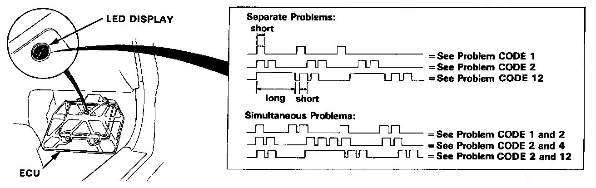

Without Scan Tool

PROCEDURE
When the Check Engine warning light has been reported on, turn the ignition on, pull down the passenger's side carpet from under the dashboard and observe the LED on the top of the ECU. The LED indicates a system failure code by blinking frequency. The ECU LED can indicate any number of simultaneous component problems by blinking separate codes, one after another. Problem codes 1 through 9 are indicated by individual short blinks. Problem codes 10 through 43 are indicated by a series of long and short blinks. One long blink equals 10 short blinks. Add the long and short blinks together to determine the problem code.

If codes other than those listed above are indicated, count the number of blinks again. If the indicator is in fact blinking unusual codes, substitute a known-good ECU and recheck. If the indication goes away, replace the original ECU.
The Check Engine warning light and ECU LED may come on, indicating a system problem, when, in fact, there is a poor or intermittent electrical connection. First, check the electrical connections, clean or repair connections if necessary.
If the Check Engine warning light is on and LED stays on, replace the ECU.
The Check Engine warning light and S4 warning light may light simultaneously when the self-diagnosis indicator blinks 8,7 and 13. Check the PGM-FI system according to the PGM-FI control system troubleshooting, then recheck the S4 warning light.